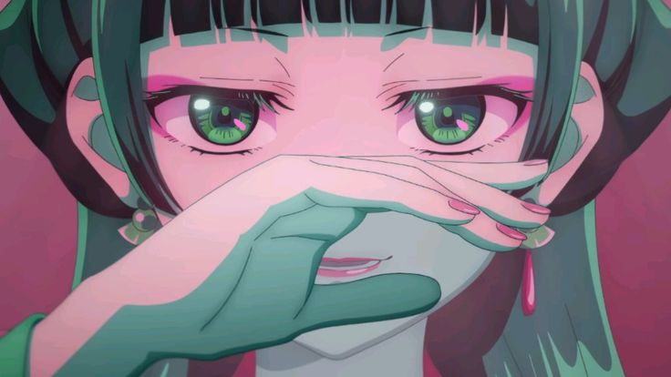

The Poisoned Banquet
A mystery based on the garden party arc of The Apothecary Diaries, Season 1, episodes 6 to 11.
You play as Maomao, Lady Gyokuyou’s food taster. Look around the inner palace, collect clues, and name whoever poisoned the soup. What you find changes where you can go and how the case ends.
Contains spoilers for the first half of Season 1.

The Poisoned Banquet
The canon ending